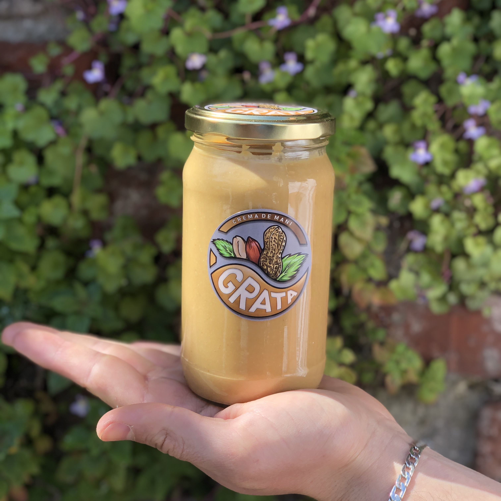

Grata Uruguay
Tienda de alimentos naturales. Cambia lo bueno por lo mejor.
Nuestro producto más popular
Clásica crema de maní

Crema de maní 350 Gramos
Alimento totalmente natural, elaborado 100% con maní de primera calidad y sin ningún tipo de agregados, simplemente un clásico de alto valor nutricional.
Crema de maní 800 Gramos
La edición XL del clásico, mayor duración, más tiempo de Grata. Ideal si ya implementaste Grata a tu nutrición.
Mix de frutos secos
Desayuno, merienda, snack; los frutos secos son alimentos de alta densidad nutricional (es decir, tienen una alta cantidad de nutrientes en su compacto tamaño), aparte de su adictivo sabor en combinación son una opción muy saludable.
Preguntas Frecuentes
-
¿Es necesario refrigerar una vez abierto?
No necesariamente, nosotros recomendamos guardarla en un lugar fresco, seco y bien cerrada, fuera de la exposición solar. En caso de que quieras guardarla en la heladera, para que vuelva a tener su cremosidad, retirar 5-10 min antes de consumirla.
-
¿La crema de maní engorda?
Si bien es sabido que se trata de un alimento hipercálorico, esta visto que debido a su matriz nutricional, es decir, su particular distribución de nutrientes resulta ser altamente saciante (esto es de intéres para todos aquellos que deseen bajar de peso). En cuanto a los frutos secos, se ha comprobado en estudios que "los frutos secos aumentan la termo-génesis (combustión de las calorías) de forma que el consumo de frutos secos no solo no engordarían, sino que incluso ayudan a mantener activo el metabolismo por un periodo mayor de tiempo".
-
¿Contiene algún agregado?
Ningún agregado de cualquier tipo fue usado en el proceso de elaboración, ¡solamente maní!
-
¿Contiene Gluten, Sal o Azúcar?
No, incluso es un alimento recomendado para veganos, celíacos, hipertensos, diabéticos y obviamente cualquier persona con ánimos de mejorar su alimentación.
-
¿Cuánto tiempo dura?
Tiene una fecha de vencimiento de 10 meses desde su elaboración (ver envase).
-
¿La separación de los aceites es normal?
Es totalmente normal, ocurre por decantación, este el aceite natural del maní que sube, quedando la crema abajo; antes de consumirlo, ¡mezclalo bien y listo!
¿Por qué Grata?
Nuestro nombre no es más que un recordatorio a algo que en el quipo le damos mucho valor y prácticamos, ejercitar la gratitud, el agradecimiento diario, por todo lo bueno que tenemos, lo no tan bueno que nos hace superarnos y mejorarnos cada vez; creemos y ejercitamos este valor y queremos compartirlo!